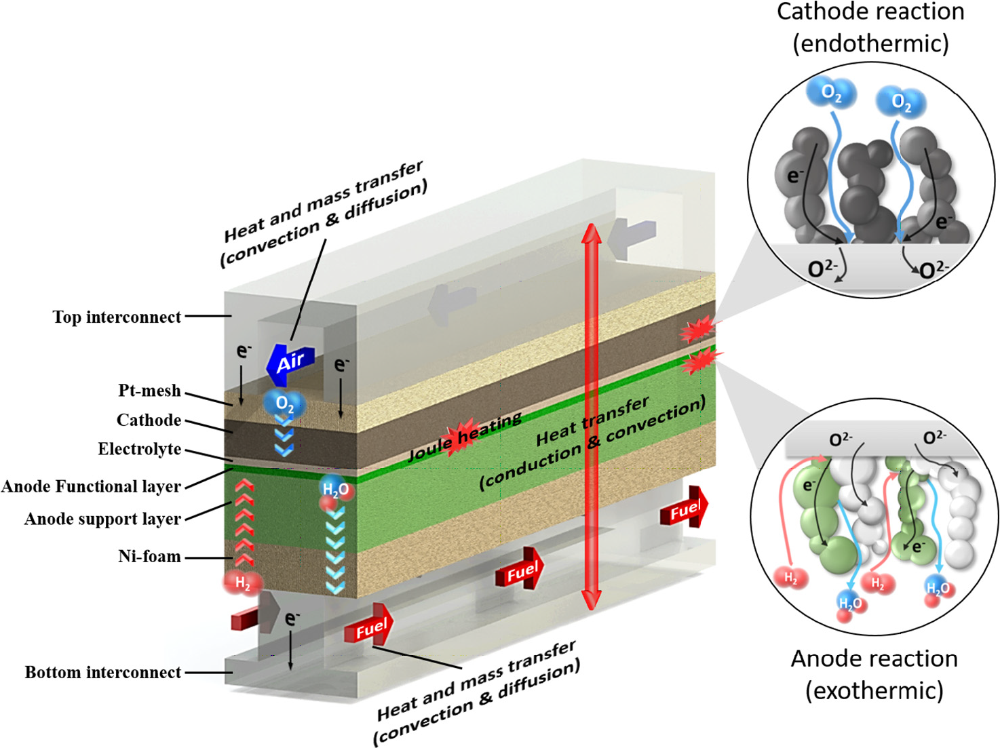

01
Multiphysics CFD for SOFC/SOEC
고체산화물 연료전지/전해전지 3차원 다중물리 해석
- 질량, 운동량, 에너지, 전하, 반응을 연성한 고정밀 3D 모델 (Ansys Fluent + UDF)
- 단일 채널(1 cm x 10 cm)부터 상용 셀(15 x 15 cm2), 스택(15 x 15 x 25 cm3)까지
- 부하 변동 시 과도(transient) 열/전기화학 거동 해석
- 열저항, 유동저항 제어를 통한 분리판(BP)/매니폴드 설계
온도 편차 65% 감소유량 편차 60% 감소스택 ΔT 66 -> 45 °C